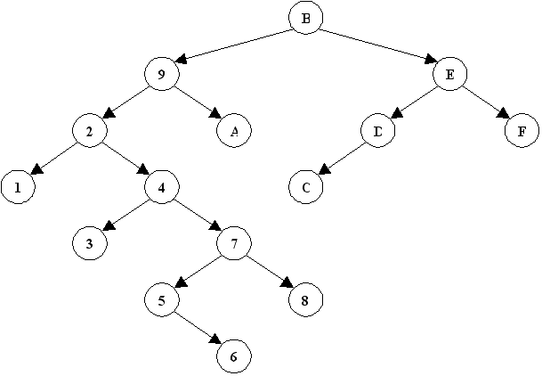
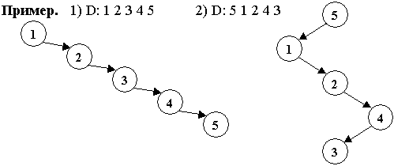
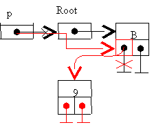
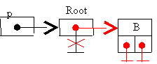
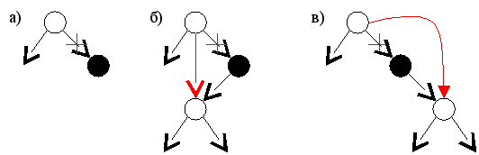
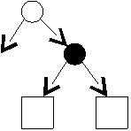
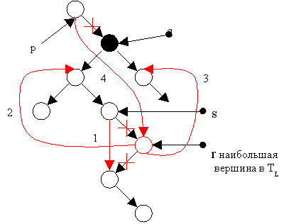

Глава 3 АВЛ-дерево
1 Определение АВЛ-дерева
2 Добавление вершины в дерево
3 Удаление вершины из дерева
1 Определение случайного дерева поиска
При решении многих типов задач объем данных заранее неизвестен, но необходима такая структура данных, для которой достаточно быстро выполняются операции поиска, добавления и удаления вершин. Одно из решений этой проблемы построение случайного дерева поиска (СДП). При построении СДП данные поступают последовательно в произвольном порядке и добавление нового элемента происходит в уже имеющееся дерево.
Пример случайного дерева поиска для последовательности D: B 9 2 4 1 7 E F A D C 3 5 8 6
приведен на рисунке 6.

Рисунок 6 - Случайное дерево поиска
Это дерево не является ИСДП. В худшем случае СДП может выродиться в список.

Рисунок 7 Плохие СДП
Таким образом, средняя высота случайного дерева поиска может изменяться в пределах log n < hср cд < n при больших n. В [1] показано, что
(
hср сд / hср
исдп) = 2ln 2 = 1,386...
и hср сд =О(log
n) при n
 .
.
2 Добавление вершины в дерево
Алгоритм добавления вершины в СДП заключается в следующем. Если дерево пустое, то создается корневая вершина, в которую записываются данные. В противном случае вершина добавляется к левому или правому поддереву в зависимости от результата сравнения с данными в текущей вершине.
При создании новой вершины нужно будет изменить значение указателя на нее, поэтому нам понадобиться указатель на указатель (двойная косвенность). На языках высокого уровня двойная косвенность обычно может быть реализована с помощью ссылки на указатель.
type pVertex = ^tVertex;
var p: ^pVertex;
Алгоритм на псевдокоде
Добавление в СДП (D, *Root)
Описание переменных: Root- указатель на корень дерева.
D -данные, которые необходимо добавить.
P -указатель на указатель на вершину дерева.
p:= @Root
DO (*p  NIL)
NIL)
IF (D < (*p)Data) p := @((*p)Left)
ELSEIF (D > (*p)Data) p := @((*p)Right)
ELSE OD {данные с ключом D уже есть в дереве}
OD
IF (*p = NIL)
new(*p), (*p)Data := D,
(*p)Right := NIL, (*p)Left := NIL
FI
Пример. Построение дерева для последовательности В 9
1). D = B 2). D = 9

Рисунок 8 - Добавление вершины В

Рисунок 9 - Добавление вершины 9
Нетрудно видеть, что
трудоемкость добавления вершины в случайное дерево поиска сравнима по
порядку величины с трудоемкостью поиска в двоичном дереве, т.е. С
ср = О(>log >n),
n .
3 Удаление вершины из дерева
Алгоритм удаления вершины с ключом равным X из случайного дерева поиска состоит в следующем. Сначала нужно найти вершину с ключом равными X. Если найденная вершина имеет не более одного поддерева, то её просто удаляем. На рисунке 10 показаны различные варианты расположения вершин. Удаляемая вершина выделена черным цветом.

Рисунок 10 - Варианты удаления вершин
Если найденная вершина имеет два поддерева (рис. 11), то тогда порядок действий следующий. На место удаляемой вершины ставится наибольшая вершина из левого поддерева (наименьшая из правого поддерева), т.е. самая правая вершина левого поддерева (самая левая из правого поддерева), которая не имеет правого поддерева (левого поддерева) (рис. 12).

Рисунок 11 - Удаляемая вершина с двумя поддеревьями

Рисунок 12 - Порядок изменения указателей при удалении вершины
Алгоритм на псевдокоде
Удаление из СДП (Х, *Root)
Обозначения
p:= @Root
DO(*p NIL)
IF((*p)Data < X) p := @((*p)Right)
ELSEIF ((*p)Data > X) p := @((*p)Left)
ELSE OD
FI
OD
IF (*p NIL)
q := *p
IF (qLeft = NIL) *p := qRight
ELSEIF (qRight = NIL) *p :=qLeft
ELSE r := qLeft, s := q
DO (rRight NIL)
s := r, r := rRight
OD
sRight := rLeft 1)
rLeft := qLeft 2)
rRight := qRight 3)
*p := r 4)
FI
dispose(q)
FI
Трудоемкость удаления вершины складывается из конечного количества операций сравнения и присваивания на каждом шаге поиска в дереве. Таким образом, трудоемкость удаления такая же, как и в случае добавления в случайное дерево поиска.
Контрольные вопросы
- Что такое случайное дерево поиска?
- Какова средняя высота СДП?
- Какова трудоемкость добавления и удаления вершины в СДП?
- Каким образом вершина удаляется из СДП?